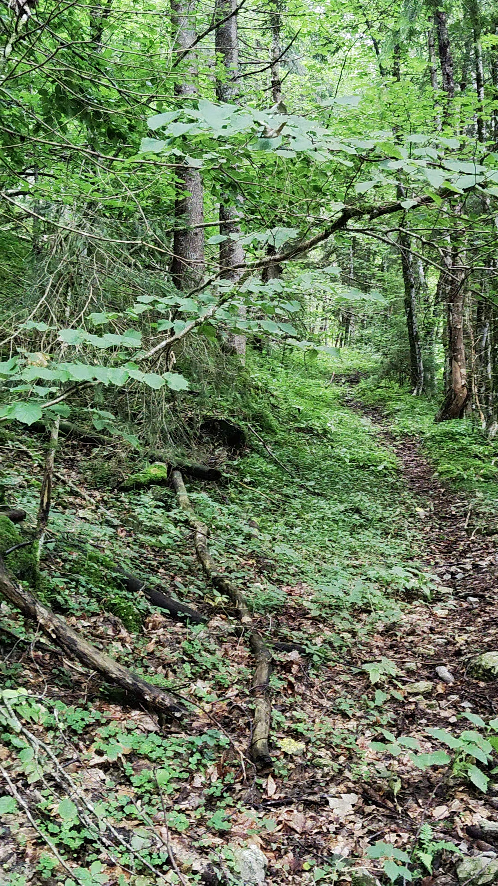
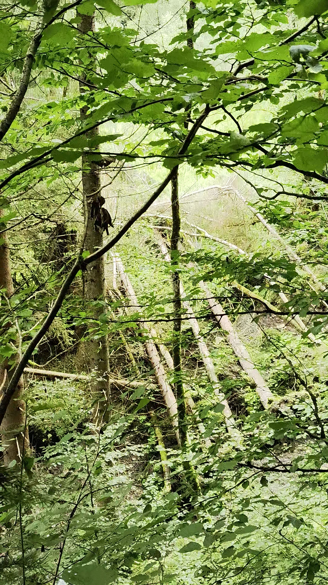
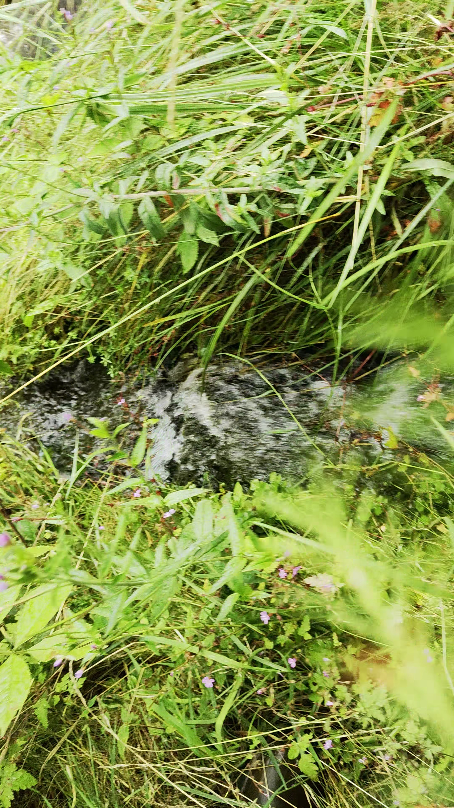

Datum: 16-09-2025 Datum der Begehung: XX.XX.XXXX Untersuchungsgebiet: Gebiet Dokumentenformat: Begehungsbericht Teilnehmende Personen: P1, P2, ...
Begehungsstatistik
- Gesamtbilder: 11 - Dokumentierte Strecke: 0.86 km (Luftlinie zwischen Aufnahmepunkten) - Koordinatensystem: WGS84 (GPS)
Zielsetzung
Zielsetzung der Begehung...
Methodik
Die Bildorganisation erfolgte automatisch nach chronologischen Kriterien. Alle Bilder werden verarbeitet, wobei Bilder ohne Zeitstempel zuerst angezeigt werden, gefolgt von Bildern mit Zeitstempel in chronologischer Reihenfolge. Die Entfernungsberechnung erfolgt mittels Haversine-Formel für präzise GPS-Distanzbestimmung zwischen aufeinanderfolgenden Aufnahmepunkten.
Ergebnis
Ergebnisse...
Schlussfolgerungen
Schlussfolgerungen...
Fotodokumentation
Abb. 1: Übersicht, grün - GPX-Track, pink - Variantenvorschlag, rote Kreise - Kontrollpunkte, rotes Polygon - zu meidende Gst, rechts der Piste - Trasse AEP-CichiniAbb. 2: Noexif media (Aufnahmezeitpunkt: 14:09, Seehöhe: 930 m)Abb. 3: Noexif media (Aufnahmezeitpunkt: 14:10, Seehöhe: 932 m)Abb. 4: Noexif media (Aufnahmezeitpunkt: 14:15, Seehöhe: 951 m)Abb. 5: Noexif media (Aufnahmezeitpunkt: 14:19, Seehöhe: 964 m)Abb. 6: Noexif media (Aufnahmezeitpunkt: 14:20, Seehöhe: 973 m)Abb. 7: Noexif media (Aufnahmezeitpunkt: 14:25, Seehöhe: 1002 m)Abb. 8: Noexif media (Aufnahmezeitpunkt: 14:26, Seehöhe: 996 m)Abb. 9: Noexif media (Aufnahmezeitpunkt: 14:29, Seehöhe: 989 m)Abb. 10: Noexif media (Aufnahmezeitpunkt: 14:50, Seehöhe: 993 m)Abb. 11: Noexif media (Aufnahmezeitpunkt: 14:52, Seehöhe: 992 m)
- Bildformat: .jpg - Dokumentformat: A4 PDF - Koordinatenquelle: GPS-Daten in Dateinamen - Datumsquelle: Datum und Uhrzeit in Dateinamen - Sortieralgorithmus: Chronologisch